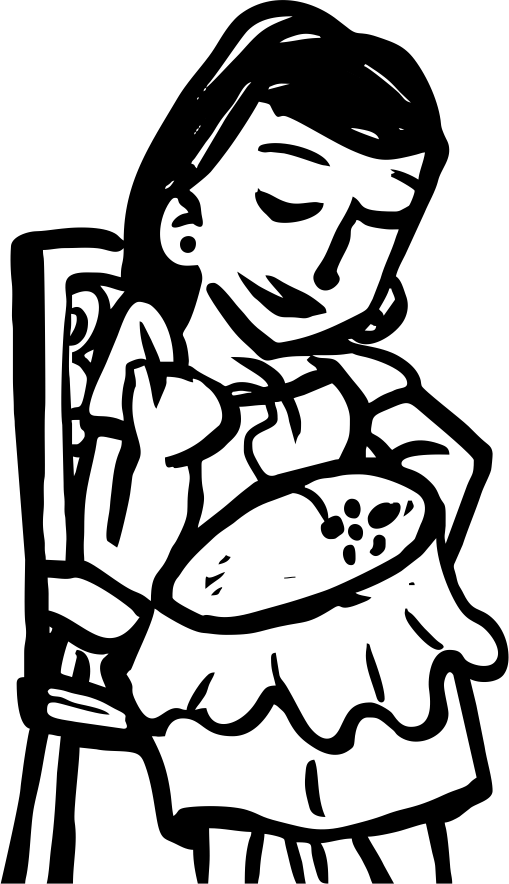
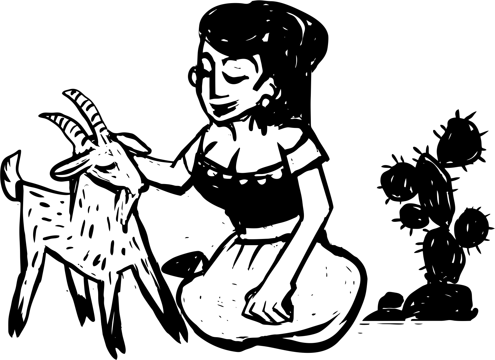
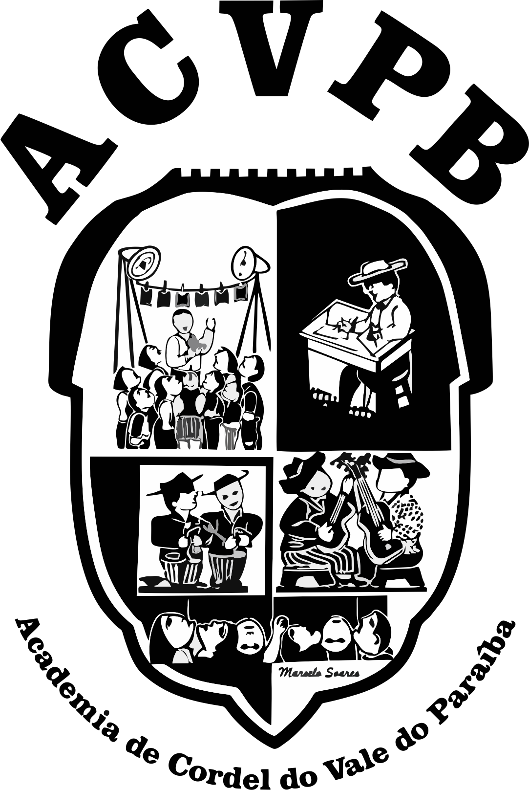

Biografias das Grandes Poetisas — Destacamos a riqueza e a diversidade das contribuições femininas na literatura de cordel.
Cordelista paraibana dedicada à preservação da literatura popular e à expressão feminina no cordel nordestino.
Saiba MaisEducadora e poetisa que utiliza a literatura de cordel como instrumento de transformação social e valorização cultural.
Saiba MaisUma das pioneiras da literatura de cordel feminina no Nordeste brasileiro, quebrando barreiras em um gênero tradicionalmente masculino.
Saiba MaisPoetisa popular nordestina que mantém viva a tradição do cordel através de versos que retratam o cotidiano e as lutas do povo.
Saiba MaisCordelista e ativista cultural que promove a literatura de cordel como patrimônio imaterial brasileiro.
Saiba MaisPesquisadora e poetisa que alia produção acadêmica à arte do cordel, contribuindo para a documentação da tradição cordelista feminina.
Saiba MaisUma das primeiras mulheres a publicar folhetos de cordel no Brasil, figura fundamental na história da literatura popular.
Saiba MaisJurista e poetisa que utiliza o cordel como ferramenta de educação jurídica popular e empoderamento feminino.
Saiba Mais